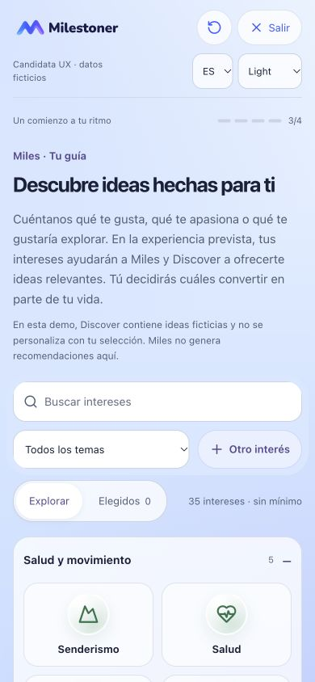
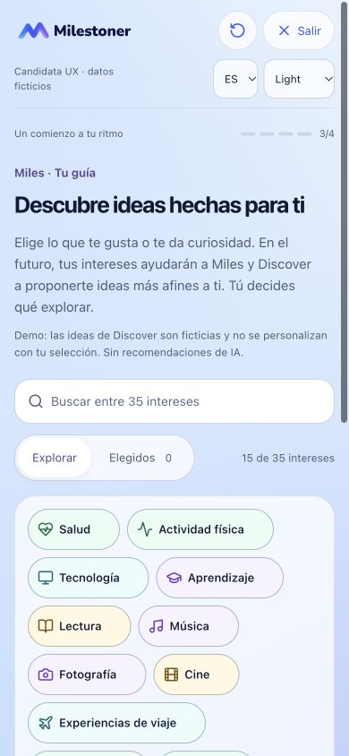
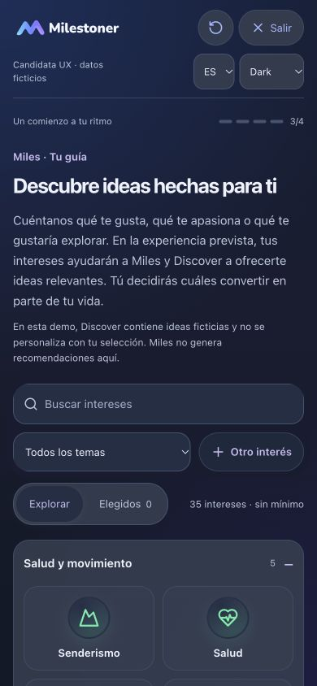
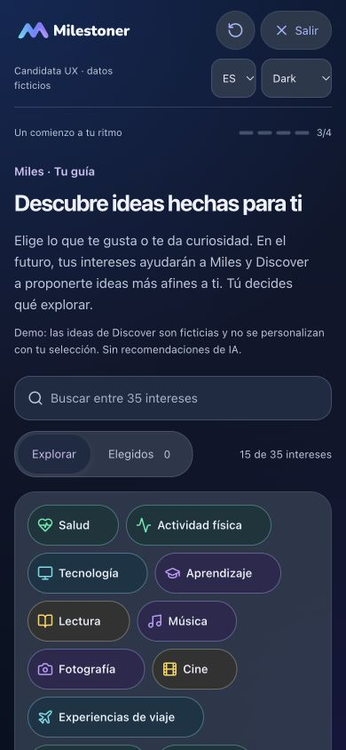
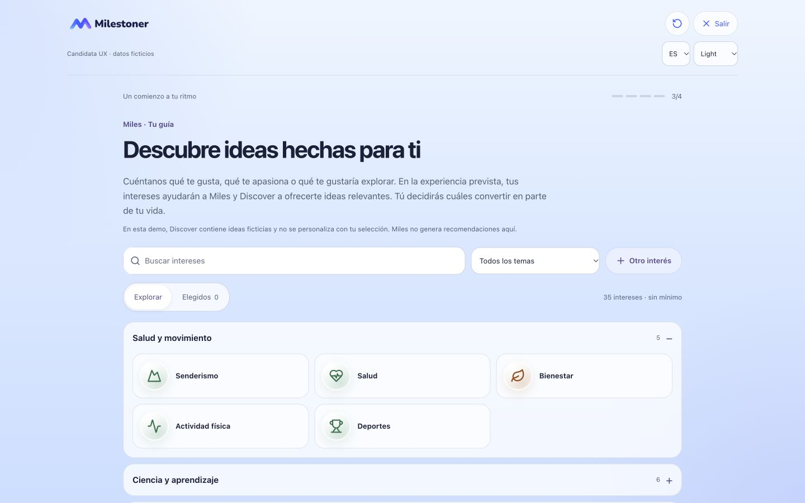
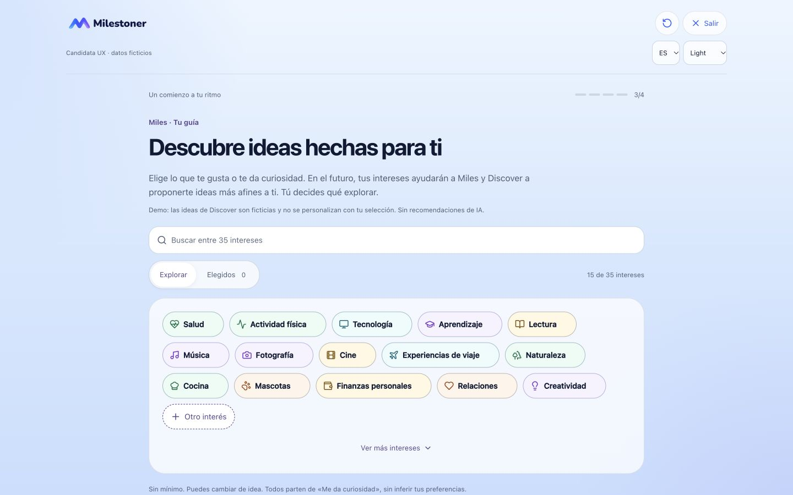
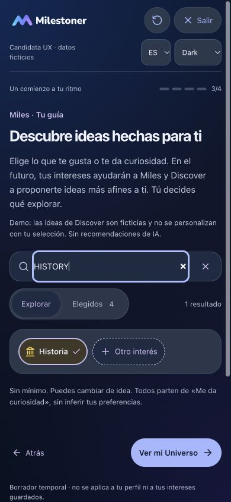
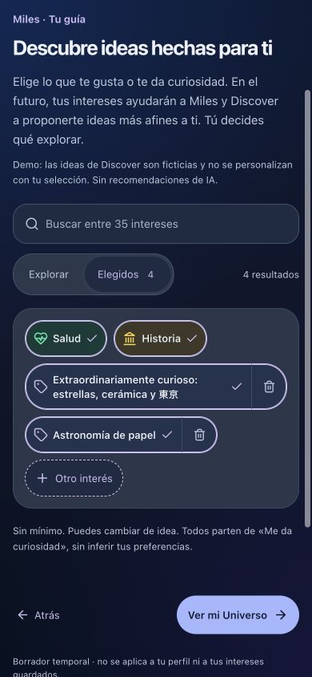

PENDING OWNER VISUAL AND FUNCTIONAL REVIEW. Una nube de cápsulas, 15 intereses iniciales y los 35 disponibles con «Ver más». Publicar no implica aceptación. Solo ejemplos ficticios.
Sin acordeones ni selector de temas. Las cápsulas tienen ancho según su contenido, un check explícito y objetivos de al menos 44px. Elegir no las reordena. La búsqueda abarca los 35 intereses, incluso los ocultos; Elegidos conserva el recuento y las selecciones al reducir la nube. «Otro interés» comparte la superficie, con eliminación separada en cada entrada propia.
Catálogo, IDs, traducciones, borrador versión 2, compatibilidad anterior, afinidad Curious y geometría del Universo se conservan. Los temas siguen siendo metadatos internos, sin nuevos Domains. El orden inicial es editorial y determinista, no una recomendación personal.
La personalización de Miles y Discover se comunica como futura. El Discover actual usa ideas ficticias y no se personaliza con esta selección. No hay IA ni servicios conectados. El borrador pertenece a la sesión de esta pestaña; no modifica Perfil, Universo ni registros guardados.
Comparación real con 44d2027: mismo idioma, viewport y cero selecciones. Las seis capturas principales muestran el inicio de cada pantalla, sin recortar el encabezado. Usa scroll en la candidata para ver todo.








Los controles de revisión permiten texto 100/150/200% y movimiento reducido. A mayor texto, las cápsulas crecen; la eliminación de entradas propias pasa debajo para dejar espacio al nombre. Una entrada excepcionalmente larga sin espacios puede necesitar ajuste de línea de emergencia. No se certifican dispositivos físicos ni lectura hablada con lector de pantalla.
Pendiente: aceptación visual y funcional del propietario. V2.5C.2 no iniciado. Las referencias privadas no se publican.